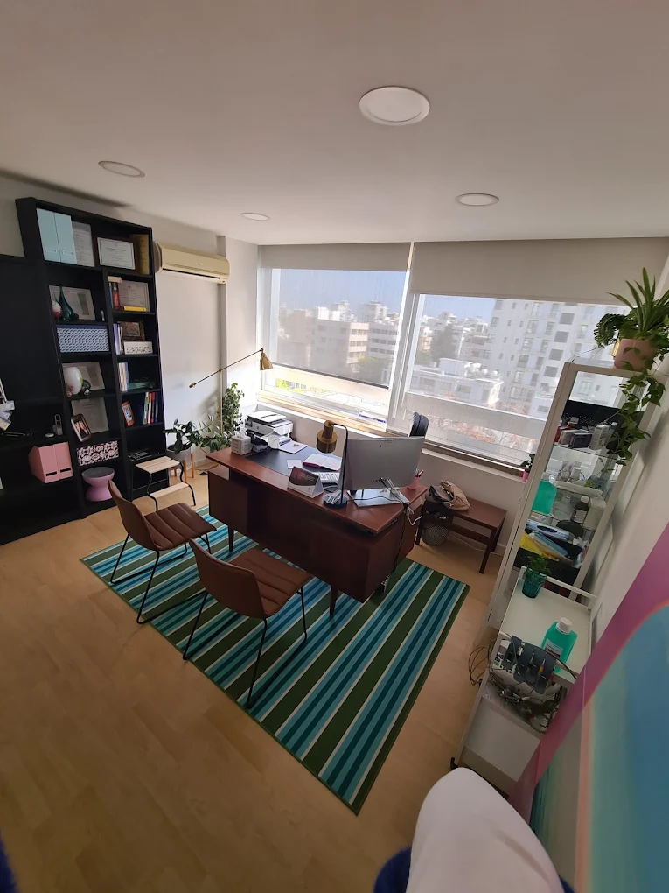

Προσωπικός Ιατρός ΓεΣΥ
Πληροφορίες και καθοδήγηση για την επικοινωνία σας με το ιατρείο.
ΛΕΥΚΩΣΙΑ · ΓΕΣΥ
Η Δρ Βικτώρια Πολυβίου είναι Προσωπικός Ιατρός ΓεΣΥ στη Λευκωσία, με στόχο μια ήρεμη, οργανωμένη και ουσιαστική εμπειρία πρωτοβάθμιας φροντίδας.

Πληροφορίες και καθοδήγηση για την επικοινωνία σας με το ιατρείο.
Στασάνδρου 9, Office 503, 1060 Λευκωσία.
Τηλεφωνήστε στο 99 232911 για πληροφορίες.
Η ΙΑΤΡΟΣ
Η Δρ Βικτώρια Πολυβίου εξυπηρετεί ως Προσωπικός Ιατρός ΓεΣΥ στη Λευκωσία. Ο ρόλος του Προσωπικού Ιατρού είναι να αποτελεί ένα σταθερό σημείο πρώτης επικοινωνίας για τις βασικές ανάγκες υγείας και για την ορθή καθοδήγηση μέσα στο σύστημα φροντίδας.
Για θέματα ραντεβού, εγγραφής ή γενικών πληροφοριών, επικοινωνήστε απευθείας με το ιατρείο. Για επείγοντα περιστατικά, καλέστε αμέσως το 112.
Επικοινωνία με το ιατρείοΠΛΗΡΟΦΟΡΙΕΣ
Η σελίδα αυτή παρέχει βασικές πληροφορίες για το ιατρείο και διευκολύνει την άμεση τηλεφωνική επικοινωνία.
Καλέστε στο 99 232911 για διαθεσιμότητα, διευκρινίσεις ή για να οργανώσετε την επίσκεψή σας.
Κλήση τώρα ↗Δείτε τα βασικά στοιχεία που συνήθως χρειάζονται πριν επικοινωνήσετε με το ιατρείο για την εγγραφή σας.
Πληροφορίες εγγραφής ↗Στασάνδρου 9, Office 503, Λευκωσία 1060. Ανοίξτε τις οδηγίες για τη διαδρομή σας.
Οδηγίες χάρτη ↗ΕΓΓΡΑΦΗ ΓΕΣΥ
Για να προστατεύονται τα προσωπικά σας δεδομένα, η ιστοσελίδα δεν συλλέγει αριθμό ταυτότητας, στοιχεία υγείας ή άλλα ευαίσθητα στοιχεία. Χρησιμοποιήστε τη λίστα προετοιμασίας και καλέστε το ιατρείο για τις σωστές οδηγίες.
Ετοιμάστε βασικά στοιχεία. Έχετε διαθέσιμα τα στοιχεία ταυτοποίησης και επικοινωνίας σας όταν μιλήσετε με το ιατρείο.
Επιβεβαιώστε τη διαθεσιμότητα. Καλέστε πριν προχωρήσετε σε οποιαδήποτε διαδικασία εγγραφής ή αλλαγής ιατρού.
Λάβετε καθοδήγηση. Το ιατρείο θα σας ενημερώσει για τα επόμενα βήματα σύμφωνα με τη διαδικασία ΓεΣΥ.
ΕΠΙΚΟΙΝΩΝΙΑ
Για πληροφορίες σχετικά με διαθεσιμότητα, επίσκεψη ή εγγραφή ΓεΣΥ, επικοινωνήστε τηλεφωνικά εντός των ωρών λειτουργίας.
99 232911Στασάνδρου 9, Office 503
Λευκωσία 1060, Κύπρος
Οι ώρες μπορεί να αλλάξουν. Επιβεβαιώστε τηλεφωνικά πριν την επίσκεψή σας.